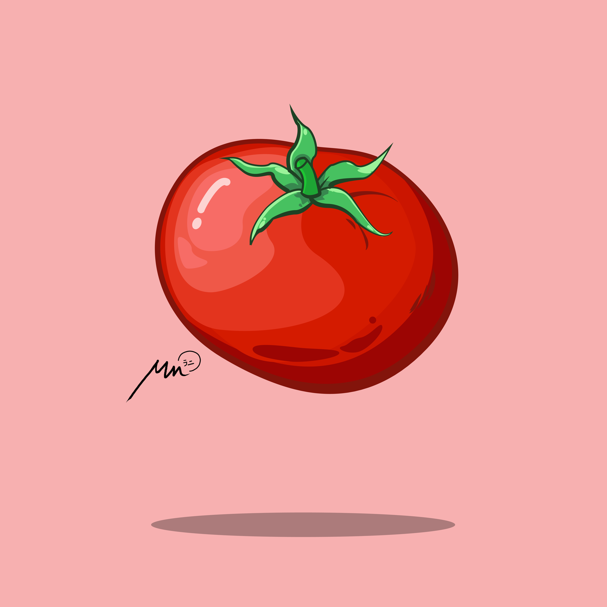
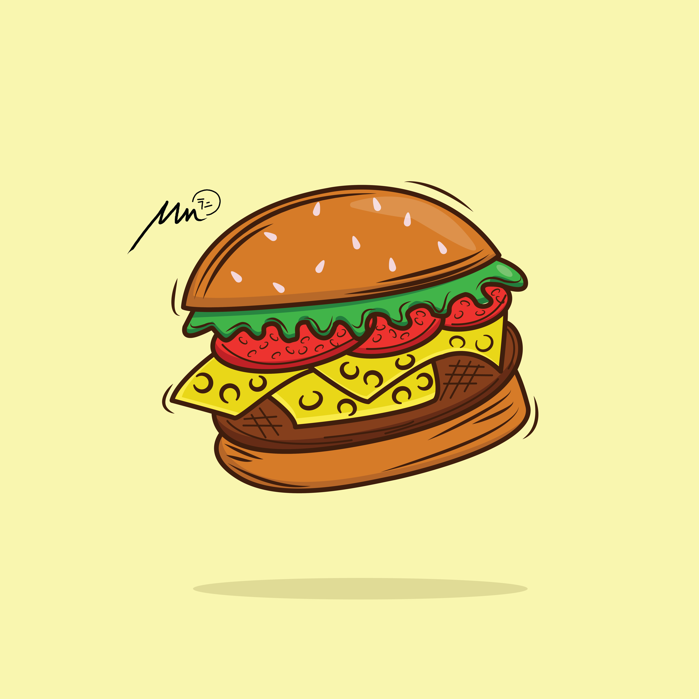

Silvermist Canny
Kumpulan Desain Saya
Ini merupakan kumpulan desain yang pernah saya buat.
Desain Vector
Kumpulan desain menggunakan software Adobe Illustrator

Tomatoes
Gambar ini dibuat pada tahun 2022 silam, tomat merupakan sayuran yang memiliki banyak manfaat baik untuk kesehatan maupun kecantikan.

Cup Cake
Gambar ini dibuat pada tahun 2022 silam, cup cake adalah salah satu deasert kesukaan saya. Banyak sekali variasi yang dimiliki oleh setiap cup cake

Hamburger
Gambar ini dibuat pada tahun 2022 silam, makanan satu ini juga menjadi favorit saya karena rasanya yang sangat enak. Isinya yang beragam itulah kenikmatannya.
KUNJUNGI LAINNYA
Karya lain yang saya miliki
- Kumpulan Desain Vector
- Kumpulan Desain Bitmap
- Kumpulan Desain Ibis Paint X
- Kumpulan Desain Picsart